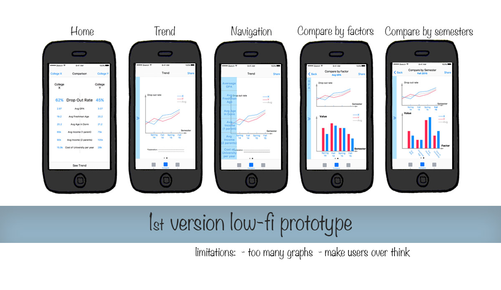
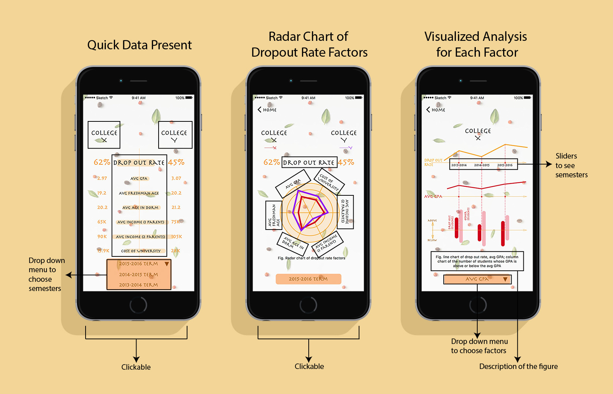

Prototype Design – An Education App
Independent Work, in "Interactive Design Method" class
The education app was designed to figure out the cause of high dropout rate in University X and Y. I designed two flows for users – one is comparing factors between two universities, another is analyzing factors within X and Y themselves.
THE GIVEN PROBLEM
Too many students are dropping out of College X (stakeholder). The drop out rate at College X is 62%. The drop out at College Y rate is 45%. The users wants to compare competitive data on a mobile device on the go anytime. The metrics are given as below: average GPA, average freshmen age, average age in dorm, average income (1 parent), average income (2 parents) and cost of University per year.
PROBLEM ANALYSIS
Before the design, we need to figure out some basic questions.
- Who are the users?
- -- Parents of Students in College X.
- What are users' goals?
- -- To quickly figure out why the dropout rate in College X is high.
- What are things users most/less likely to see?
- -- They prefer clear and visualized figures than a large amount of data. They need to see potential reasons rather than deep analysis.
- What kinds of questions might users ask?
- -- What are the potential reasons and what is the inner connection? What is the dropout rate for each semester? The number of dropout students in each college.
WIREFRAME, problems of the 1st version
I designed two flows for users – one is comparing factors between two universities, another is analyzing factors within X and Y themselves. The first version wireframe/ low-fidelity prototype includes too many graphs, making users confused. It was designed more like a website which provides deep analysis.

PROTOTYPE, changes made in 2nd VERSION
The challenge of this project is to show as many information as possible while keeping them easily to be read in that readers do not want to spend long time figuring out reasons for the drop out rate. On the contrary, they want the simplest and visualized answer. They neither want too much analysis (figures or data), so I tried to cover more information in one figure.

UI/Interaction DESIGN
The interfaces were designed in a tweedy style to make users relaxed. The descriptions of each figure was presented at the bottom of the page.
